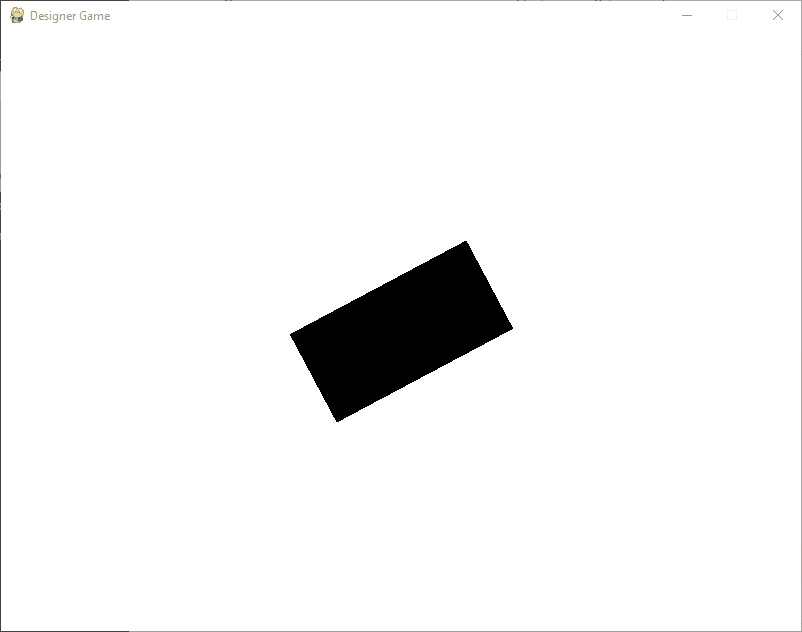
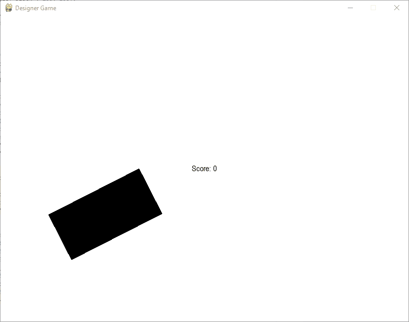
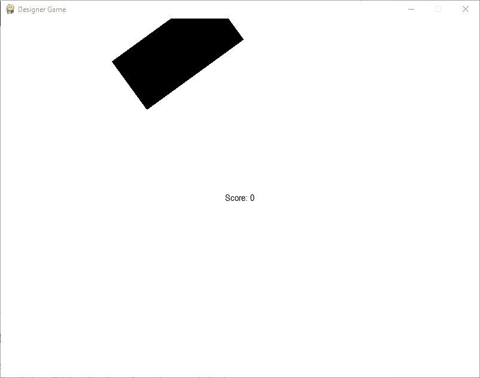

Designer Worlds¶
Graphics are great, but wouldn’t it be cool to make stuff move and bounce and jump? To click your mouse and collect a coin, or strike a key and make a heart wiggle? In this guide, we’ll talk about how you can use Designer to make a game, animation, or interactive visualization.
We begin with the absolute minimum Designer program:
from designer import *
start()
from designer import *
start()
The first line of code imports all of Designer’s commands, making them available to be used.
The second line (start()) causes an external blank white window to appear.
You will generally always need these two lines of code for Designer to function.
The start command works just like the draw command, but helps us to understand that we are
“starting” a game rather than just drawing some simple objects.
The start() command goes at the very end of all of your other code. Once you
start your game, no other code will run: the game enters an infinite loop and continues forever.
Let’s see what kind of code we can put before then.
{kind=link}
The World¶
A central concept in Designer games is the World. The state (or “model”) of the World controls what you see in the Window (or “View”). If something does not exist in the World, then it does not exist in the Window. Technically speaking, the state of the World can be any type of data, but by convention we make it a dataclass or a dictionary containing references to Designer Objects.
Let’s make a simple World with just a box in the center of the screen.
1from designer import *
2from dataclasses import dataclass
3
4@dataclass
5class World:
6 box: DesignerObject
7
8
9def create_the_world() -> World:
10 """
11 Create a new World with a 20x30 black rectangle inside.
12 """
13 return World(rectangle("black", 200, 100))
14
15# This tells Designer to call our `create_the_world` function
16# when the game starts, in order to setup our initial World.
17when("starting", create_the_world)
18
19start()
1from designer import *
2
3# Define the shape of the World
4World = { "box": DesignerObject }
5
6# Create a function that creates new worlds
7def create_the_world() -> World:
8 # Actually create an initial World instance
9 return {
10 # The world has a 20x30 black rectangle in it
11 "box": rectangle("black", 200, 100)
12 }
13
14# This tells Designer to call our `create_the_world` function
15# when the game starts, in order to setup our initial World.
16when("starting", create_the_world)
17
18start()
To properly define a World, we create a definition on line 4. We say that a World is has a box
with a value of type DesignerObject.
The DesignerObject is a fundamental concept in Designer, representing the actual drawable shapes
and images on the screen.
The definition only describes the shape of the World; no actual World has been created yet.
Instead, that is the responsibility of the create_the_world function.
This is a “nullary function” (it takes no parameters) that returns a World.
You might also call it a “constructor” for Worlds. Every time we call that function,
we get a fresh new copy of the default, initial World. However, we do not call that function
ourselves.
Instead, we pass the name of the function (without parentheses!) to the code:when function, to tell Designer
what to do when the game is starting. Formally, we are binding the "starting" event
to our event handler function create_the_world. Informally, we can say that now
the create_the_world function will be called on the game’s start, in order to create
the World.
Our World is quite simple: it only has a box mapped to a rectangle.
We created the rectangle to be black and have a width of 200 and a height of 100.
Because the rectangle is stored in World that we return, it will be drawn on the screen.
{kind=link}
Updating the World¶
We’ve created a rectangle, but it’s not doing anything yet. Let’s create a function that will tell Designer how to manipulate our rectangle.
1from designer import *
2from dataclasses import dataclass
3
4@dataclass
5class World:
6 box: DesignerObject
7
8def create_the_world() -> World:
9 """
10 Create a new World with a 20x30 black rectangle inside.
11 """
12 return World(rectangle("black", 200, 100))
13
14def spin_the_box(world: World):
15 """
16 Increase the world's box angle by one degree, spinning the box a small amount.
17 """
18 world.box.angle += 1
19
20# This tells Designer to call our `create_the_world` function
21# when the game starts, in order to setup our initial World.
22when("starting", create_the_world)
23# Tell Designer to call our spin_the_box function every update.
24# There are usually 30 updates per second!
25when("updating", spin_the_box)
26
27start()
1from designer import *
2
3# Define the shape of the World
4World = { "box": DesignerObject }
5
6# Create a function that creates new worlds
7def create_the_world() -> World:
8 # Actually create an initial World instance
9 return {
10 # The world has a 20x30 black rectangle in it
11 "box": rectangle("black", 200, 100)
12 }
13
14# Define a function that spins the box
15def spin_the_box(world: World):
16 # Increase the boxes angle by one degree
17 world['box']['angle'] += 1
18
19# This tells Designer to call our `create_the_world` function
20# when the game starts, in order to setup our initial World.
21when("starting", create_the_world)
22# Tell Designer to call our spin_the_box function every update.
23# There are usually 30 updates per second!
24when("updating", spin_the_box)
25
26start()
The new function, spin_the_box consumes a World and changes the value in one of its fields.
Specifically, it accesses the 'box' to get access to our previously-created rectangle,
and then increments its angle by 1. This means to “rotate the box by one degree.”
On its own, defining the spin_the_box function does not do anything. We also cannot call
the function on our own - that would simply rotate the box by only one degree (a tiny amount), and where
would we get a World from anyway?
Instead we have to bind the "updating" event to our spin_the_box function using the
when built-in function. The result almost reads like a sentence: “When the
game is updating, spin the box.” This is why it is necessary to only rotate the box a single
degree: the game updates many times a second (usually 30 times, in fact), so we only have
to describe a very small, incremental change to our world.
This idea of defining functions that make small changes in the world, and then binding them with the when function is at the heart of Designer games. We call this “Event Handling”.
{kind=link}
Interacting with the World¶
It’s not a game if there isn’t any interaction, so let’s now add the ability to move the
rectangle by clicking on the screen. We’ll use another event type, "clicking", which
provides some additional parameters.
1from designer import *
2from dataclasses import dataclass
3
4@dataclass
5class World:
6 box: DesignerObject
7
8def create_the_world() -> World:
9 """
10 Create a new World with a 20x30 black rectangle inside.
11 """
12 return World(rectangle("black", 200, 100))
13
14def spin_the_box(world: World):
15 """
16 Increase the world's box angle by one degree, spinning the box a small amount.
17 """
18 world.box.angle += 1
19
20def move_the_box(world: World, x: int, y: int):
21 """
22 Move the box to the given position.
23 """
24 world.box.x = x
25 world.box.y = y
26
27# This tells Designer to call our `create_the_world` function
28# when the game starts, in order to setup our initial World.
29when("starting", create_the_world)
30# Tell Designer to call our spin_the_box function every update.
31# There are usually 30 updates per second!
32when("updating", spin_the_box)
33# Tell Designer to call our move_the_box function every click.
34when("clicking", move_the_box)
35
36start()
1from designer import *
2
3# Define the shape of the World
4World = { "box": DesignerObject }
5
6# Create a function that creates new worlds
7def create_the_world() -> World:
8 # Actually create an initial World instance
9 return {
10 # The world has a 20x30 black rectangle in it
11 "box": rectangle("black", 200, 100)
12 }
13
14# Define a function that spins the box
15def spin_the_box(world: World):
16 # Increase the boxes angle by one degree
17 world['box']['angle'] += 1
18
19# Move the box to the given position
20def move_the_box(world: World, x: int, y: int):
21 # Adjust the X and Y positions of the box
22 world['box']['x'] = x
23 world['box']['y'] = y
24
25# This tells Designer to call our `create_the_world` function
26# when the game starts, in order to setup our initial World.
27when("starting", create_the_world)
28# Tell Designer to call our spin_the_box function every update.
29# There are usually 30 updates per second!
30when("updating", spin_the_box)
31# Tell Designer to call our move_the_box function every click.
32when("clicking", move_the_box)
33
34start()
The new function move_the_box takes in two parameters, which are carefully named x and y.
The names matter here, because Designer will actually look at them and expect those names!
If you chose other names, then an error message would appear. But because we chose the right names,
when we click the mouse, Designer will call the move_the_box function, passing in not only the current world
but also the X and Y of the mouse.
These X and Y values are then assigned to the boxes x and y fields, updating its position on the screen.
The only other thing to do is to bind the function to the event. Again, the name matters here: a typo would prevent the event from being bound correctly, and the function would not be called.
{kind=link}
A Touch of Randomness¶
A game has an objective, and since our game doesn’t, it’s actually more of a visualization. Let’s change things up so that we have a goal: to click on the spinning box as it jumps around the screen randomly. Let’s focus on making the box jump around randomly first.
1from designer import *
2import random
3from dataclasses import dataclass
4
5@dataclass
6class World:
7 box: DesignerObject
8
9def create_the_world() -> World:
10 """
11 Create a new World with a 20x30 black rectangle inside.
12 """
13 return World(rectangle("black", 200, 100))
14
15def spin_the_box(world: World):
16 """
17 Increase the world's box angle by one degree, spinning the box a small amount.
18 """
19 world.box.angle += 1
20
21def teleport_the_box(world: World):
22 """
23 Move the box to a random position
24 """
25 # Have a 1 in 10 chance of jumping around
26 if random.randint(0, 9) == 0:
27 # Set x/y to be random coordinates within the bounds of the
28 # window, given by get_width() and get_height()
29 world.box.x = random.randint(0, get_width())
30 world.box.y = random.randint(0, get_height())
31
32# This tells Designer to call our `create_the_world` function
33# when the game starts, in order to setup our initial World.
34when("starting", create_the_world)
35# Tell Designer to call our spin_the_box function every update.
36# There are usually 30 updates per second!
37when("updating", spin_the_box)
38# Tell Designer to call teleport_the_box every update.
39when("updating", teleport_the_box)
40
41start()
1from designer import *
2import random
3
4# Define the shape of the World
5World = { "box": DesignerObject }
6
7# Create a function that creates new worlds
8def create_the_world() -> World:
9 # Actually create an initial World instance
10 return {
11 # The world has a 20x30 black rectangle in it
12 "box": rectangle("black", 200, 100)
13 }
14
15# Define a function that spins the box
16def spin_the_box(world: World):
17 # Increase the boxes angle by one degree
18 world['box']['angle'] += 1
19
20# Move the box to a random position
21def teleport_the_box(world: World):
22 # Have a 1 in 10 chance of jumping around
23 if random.randint(0, 9) == 0:
24 # Set x/y to be random coordinates within the bounds of the
25 # window, given by get_width() and get_height()
26 world['box']['x'] = random.randint(0, get_width())
27 world['box']['y'] = random.randint(0, get_height())
28
29# This tells Designer to call our `create_the_world` function
30# when the game starts, in order to setup our initial World.
31when("starting", create_the_world)
32# Tell Designer to call our spin_the_box function every update.
33# There are usually 30 updates per second!
34when("updating", spin_the_box)
35# Tell Designer to call teleport_the_box every update.
36when("updating", teleport_the_box)
37
38start()
We’ve made a number of changes to our previous function. First, it’s no longer bound to the
'clicking' event, but bound to the 'updating' event. Designer let’s you bind any number of functions
to the same event, with no limitation. You can also pass in multiple functions to the same event, if you want.
The move_the_box function has become teleport_the_box, and it no longer consumes an x and a
y (since those were only available in the clicking event). Instead, we now set the boxes
x and y fields to be a randomly chosen value between 0 and either the width of the window
(from get_width) or the height of the window (from get_height).
The randint function is available in the built-in random module, and produces an
integer between the two values given as parameters.
If we teleported the box every step, the box would move very, very fast. To make things a little fairer, we only
teleport the box on 1 in 10 updates. To achieve this, we guard the update with an if statement that checks if a
randomly chosen value between 0 and 9 (including 9 itself) is equal to 0. Since this will happen about 10% of the time,
so we can anticipate this happening only about 3 times a second (since Designer games update 30 times a second by default).
Notice that we are still calling the function every update; we just don’t execute the body of its if statement every update!
{kind=link}
Keeping Score¶
We’re going to earn points by clicking on the rectangle, but how do we know if we were successful? A simple solution is to keep score and show the user how many times they have clicked the rectangle.
1from designer import *
2import random
3from dataclasses import dataclass
4
5@dataclass
6class World:
7 box: DesignerObject
8 message: DesignerObject
9 score: int
10
11
12def create_the_world() -> World:
13 """
14 Create a new World with a 20x30 black rectangle inside, a message with default text,
15 and a score that's initially 0.
16 """
17 return World(rectangle("black", 200, 100),
18 text("black", "Score:"),
19 0)
20
21def spin_the_box(world: World):
22 """
23 Increase the world's box angle by one degree, spinning the box a small amount.
24 """
25 world.box.angle += 1
26
27def teleport_the_box(world: World):
28 """ Move the box to a random position """
29 # Have a 1 in 10 chance of jumping around
30 if random.randint(0, 9) == 0:
31 # Set x/y to be random coordinates within the bounds of the
32 # window, given by get_width() and get_height()
33 world.box.x = random.randint(0, get_width())
34 world.box.y = random.randint(0, get_height())
35
36def track_the_score(world: World):
37 """ Keep the message in sync with the current score """
38 # Get the current score
39 score = world.score
40 # Update the message's text based on the score
41 world.message.text = "Score: " + str(score)
42
43# This tells Designer to call our `create_the_world` function
44# when the game starts, in order to setup our initial World.
45when("starting", create_the_world)
46# Tell Designer to call our spin_the_box function every update.
47# There are usually 30 updates per second!
48when("updating", spin_the_box)
49# Tell Designer to call teleport_the_box every update.
50when("updating", teleport_the_box)
51# Tell Designer to call track_the_score every update.
52when("updating", track_the_score)
53
54start()
1from designer import *
2import random
3
4# Define the shape of the World
5World = {
6 "box": DesignerObject,
7 "message": DesignerObject,
8 "score": int,
9}
10
11# Create a function that creates new worlds
12def create_the_world() -> World:
13 # Actually create an initial World instance
14 return {
15 # The world has a 20x30 black rectangle in it
16 "box": rectangle("black", 200, 100),
17 # The message to show the user
18 "message": text("black", "Score:"),
19 # The player's current score
20 "score": 0
21 }
22
23# Define a function that spins the box
24def spin_the_box(world: World):
25 # Increase the boxes angle by one degree
26 world['box']['angle'] += 1
27
28# Move the box to a random position
29def teleport_the_box(world: World):
30 # Have a 1 in 10 chance of jumping around
31 if random.randint(0, 9) == 0:
32 # Set x/y to be random coordinates within the bounds of the
33 # window, given by get_width() and get_height()
34 world['box']['x'] = random.randint(0, get_width())
35 world['box']['y'] = random.randint(0, get_height())
36
37# Keep the message in sync with the current score
38def track_the_score(world: World):
39 # Get the current score
40 score = world['score']
41 # Update the message's text based on the score
42 world['message']['text'] = "Score: " + str(score)
43
44# This tells Designer to call our `create_the_world` function
45# when the game starts, in order to setup our initial World.
46when("starting", create_the_world)
47# Tell Designer to call our spin_the_box function every update.
48# There are usually 30 updates per second!
49when("updating", spin_the_box)
50# Tell Designer to call teleport_the_box every update.
51when("updating", teleport_the_box)
52# Tell Designer to call track_the_score every update.
53when("updating", track_the_score)
54
55start()
This isn’t a terribly exciting update in terms of new functionality, since all that appears on the screen is the
text Score: 0. Without a way to increase the score, we don’t see very much. However, this demonstrates how we
can have state besides DesignerObjects (the "score", an integer) and also display text on the screen. In order to keep
the text in sync with the score, we’ve defined a function named track_the_score that gets called every update. Notice
how we extract data from the World (specifically, the current "score") and use that to update the field of the text
object we created before. In order to prefix the score with the text "Score:", we had to convert the integer score to
a string representation.
{kind=link}
Responding to Clicks¶
1from designer import *
2import random
3from dataclasses import dataclass
4
5@dataclass
6class World:
7 box: DesignerObject
8 message: DesignerObject
9 score: int
10
11
12def create_the_world() -> World:
13 """
14 Create a new World with a 20x30 black rectangle inside, a message with default text,
15 and a score that's initially 0.
16 """
17 return World(rectangle("black", 200, 100),
18 text("black", "Score:"),
19 0)
20
21def spin_the_box(world: World):
22 """
23 Increase the world's box angle by one degree, spinning the box a small amount.
24 """
25 world.box.angle += 1
26
27def teleport_the_box(world: World):
28 """ Move the box to a random position """
29 # Have a 1 in 10 chance of jumping around
30 if random.randint(0, 9) == 0:
31 # Set x/y to be random coordinates within the bounds of the
32 # window, given by get_width() and get_height()
33 world.box.x = random.randint(0, get_width())
34 world.box.y = random.randint(0, get_height())
35
36def track_the_score(world: World):
37 """ Keep the message in sync with the current score """
38 # Get the current score
39 score = world.score
40 # Update the message's text based on the score
41 world.message.text = "Score: " + str(score)
42
43
44def check_box_clicked(world: World, x: int, y: int):
45 """ Check if the box has been clicked and increase the score """
46 # Use the Designer function colliding to check if two objects or
47 # an object and a point are colliding.
48 if colliding(world.box, x, y):
49 # Update the score on a successful click
50 world.score += 1
51
52
53# This tells Designer to call our `create_the_world` function
54# when the game starts, in order to setup our initial World.
55when("starting", create_the_world)
56# Tell Designer to call our spin_the_box function every update.
57# There are usually 30 updates per second!
58when("updating", spin_the_box)
59# Tell Designer to call teleport_the_box every update.
60when("updating", teleport_the_box)
61# Tell Designer to call track_the_score every update.
62when("updating", track_the_score)
63# Tell Designer to call check_box_clicked when the mouse is clicked
64when('clicking', check_box_clicked)
65
66start()
1from designer import *
2import random
3
4# Define the shape of the World
5World = {
6 "box": DesignerObject,
7 "message": DesignerObject,
8 "score": int,
9}
10
11
12# Create a function that creates new worlds
13def create_the_world() -> World:
14 # Actually create an initial World instance
15 return {
16 # The world has a 20x30 black rectangle in it
17 "box": rectangle("black", 200, 100),
18 # The message to show the user
19 "message": text("black", "Score:"),
20 # The player's current score
21 "score": 0
22 }
23
24
25# Define a function that spins the box
26def spin_the_box(world: World):
27 # Increase the boxes angle by one degree
28 world['box']['angle'] += 1
29
30
31# Move the box to a random position
32def teleport_the_box(world: World):
33 # Have a 1 in 10 chance of jumping around
34 if random.randint(0, 9) == 0:
35 # Set x/y to be random coordinates within the bounds of the
36 # window, given by get_width() and get_height()
37 world['box']['x'] = random.randint(0, get_width())
38 world['box']['y'] = random.randint(0, get_height())
39
40
41# Keep the message in sync with the current score
42def track_the_score(world: World):
43 # Get the current score
44 score = world['score']
45 # Update the message's text based on the score
46 world['message']['text'] = "Score: " + str(score)
47
48
49# Check if the box has been clicked and increase the score
50def check_box_clicked(world: World, x: int, y: int):
51 # Use the Designer function colliding to check if two objects or
52 # an object and a point are colliding.
53 if colliding(world['box'], x, y):
54 # Update the score on a successful click
55 world['score'] += 1
56
57
58# This tells Designer to call our `create_the_world` function
59# when the game starts, in order to setup our initial World.
60when("starting", create_the_world)
61# Tell Designer to call our spin_the_box function every update.
62# There are usually 30 updates per second!
63when("updating", spin_the_box)
64# Tell Designer to call teleport_the_box every update.
65when("updating", teleport_the_box)
66# Tell Designer to call track_the_score every update.
67when("updating", track_the_score)
68# Tell Designer to call check_box_clicked when the mouse is clicked
69when('clicking', check_box_clicked)
70
71start()
We haven’t added much new code - mostly just a new event handler named check_box_clicked. This function
is bound to the "clicking" event that we saw before. However, the function uses a new feature we haven’t
yet seen: the handy colliding function. This function can take in either two objects, or an object
and an x/y pair. The function returns True if they overlap, or otherwise False if they do not. We use the function
here to detect if the box was clicked.
Actually clicking the box is a little tricky! For testing purposes, you might want to disable the teleportation or decrease the probability that it will teleport on a given update. Regardless, you can see from the video below that clicking on the rectangle gives you a point.
{kind=link}
Ending the Game¶
Our game is almost complete. All that we have to do now is establish some criteria for when the game is over, and
then stop the game. For that, we’ll take advantage of a custom event check and the Designer pause function.
1from designer import *
2import random
3from dataclasses import dataclass
4
5@dataclass
6class World:
7 box: DesignerObject
8 message: DesignerObject
9 score: int
10 timer: int
11
12# The score you need to win the game
13WIN_THRESHOLD = 5
14# The number of updates before the game should end
15# 30 updates per second, for 10 seconds
16LENGTH_OF_GAME = 30 * 10
17
18def create_the_world() -> World:
19 """
20 Create a new World with a 20x30 black rectangle inside, a message with default text,
21 and a score that's initially 0.
22 """
23 return World(rectangle("black", 200, 100),
24 text("black", "Score:"),
25 0,
26 0)
27
28def spin_the_box(world: World):
29 """
30 Increase the world's box angle by one degree, spinning the box a small amount.
31 """
32 world.box.angle += 1
33
34def teleport_the_box(world: World):
35 """ Move the box to a random position """
36 # Have a 1 in 10 chance of jumping around
37 if random.randint(0, 9) == 0:
38 # Set x/y to be random coordinates within the bounds of the
39 # window, given by get_width() and get_height()
40 world.box.x = random.randint(0, get_width())
41 world.box.y = random.randint(0, get_height())
42
43def track_the_score(world: World):
44 """ Keep the message in sync with the current score """
45 # Get the current score
46 score = world.score
47 # Update the message's text based on the score
48 world.message.text = "Score: " + str(score)
49
50def check_box_clicked(world: World, x: int, y: int):
51 """ Check if the box has been clicked and increase the score """
52 # Use the Designer function colliding to check if two objects or
53 # an object and a point are colliding.
54 if colliding(world.box, x, y):
55 # Update the score on a successful click
56 world.score += 1
57
58def advance_the_timer(world: World):
59 """ Advance the timer by one step """
60 world.timer += 1
61
62def the_timer_runs_out(world: World):
63 """ Check if the score is above the threshold """
64 return world.timer >= LENGTH_OF_GAME
65
66def flash_game_over(world: World):
67 """ Flash a game over message """
68 if world.score >= WIN_THRESHOLD:
69 world.message.text = "Game over, you won!"
70 else:
71 world.message.text = "Game over, you lose!"
72
73# This tells Designer to call our `create_the_world` function
74# when the game starts, in order to setup our initial World.
75when("starting", create_the_world)
76# Tell Designer to call our spin_the_box function every update.
77# There are usually 30 updates per second!
78when("updating", spin_the_box)
79# Tell Designer to call teleport_the_box every update.
80when("updating", teleport_the_box)
81# Tell Designer to call track_the_score every update.
82when("updating", track_the_score)
83# Tell Designer to call check_box_clicked when the mouse is clicked
84when('clicking', check_box_clicked)
85# Tell Designer to update the timer
86when('updating', advance_the_timer)
87# Tell Designer to check if the game is over, then flash our message
88# and pause on that screen
89when(the_timer_runs_out, flash_game_over, pause)
90
91start()
1from designer import *
2import random
3
4# Define the shape of the World
5World = {
6 "box": DesignerObject,
7 "message": DesignerObject,
8 "score": int,
9 "timer": int
10}
11
12# The score you need to win the game
13WIN_THRESHOLD = 5
14# The number of updates before the game should end
15# 30 updates per second, for 10 seconds
16LENGTH_OF_GAME = 30 * 10
17
18# Create a function that creates new worlds
19def create_the_world() -> World:
20 # Actually create an initial World instance
21 return {
22 # The world has a 20x30 black rectangle in it
23 "box": rectangle("black", 200, 100),
24 # The message to show the user
25 "message": text("black", "Score:"),
26 # The player's current score
27 "score": 0,
28 # The initial timer's time
29 "timer": 0,
30 }
31
32# Define a function that spins the box
33def spin_the_box(world: World):
34 # Increase the boxes angle by one degree
35 world['box']['angle'] += 1
36
37# Move the box to a random position
38def teleport_the_box(world: World):
39 # Have a 1 in 10 chance of jumping around
40 if random.randint(0, 9) == 0:
41 # Set x/y to be random coordinates within the bounds of the
42 # window, given by get_width() and get_height()
43 world['box']['x'] = random.randint(0, get_width())
44 world['box']['y'] = random.randint(0, get_height())
45
46# Keep the message in sync with the current score
47def track_the_score(world: World):
48 # Get the current score
49 score = world['score']
50 # Update the message's text based on the score
51 world['message']['text'] = "Score: " + str(score)
52
53# Check if the box has been clicked and increase the score
54def check_box_clicked(world: World, x: int, y: int):
55 # Use the Designer function colliding to check if two objects or
56 # an object and a point are colliding.
57 if colliding(world['box'], x, y):
58 # Update the score on a successful click
59 world['score'] += 1
60
61def advance_the_timer(world: World):
62 """ Advance the timer by one step """
63 world['timer'] += 1
64
65def the_timer_runs_out(world: World):
66 """ Check if the score is above the threshold """
67 return world['timer'] >= LENGTH_OF_GAME
68
69# Flash a game over message
70def flash_game_over(world: World):
71 if world['score'] >= WIN_THRESHOLD:
72 world['message']['text'] = "Game over, you won!"
73 else:
74 world['message']['text'] = "Game over, you lose!"
75
76# This tells Designer to call our `create_the_world` function
77# when the game starts, in order to setup our initial World.
78when("starting", create_the_world)
79# Tell Designer to call our spin_the_box function every update.
80# There are usually 30 updates per second!
81when("updating", spin_the_box)
82# Tell Designer to call teleport_the_box every update.
83when("updating", teleport_the_box)
84# Tell Designer to call track_the_score every update.
85when("updating", track_the_score)
86# Tell Designer to call check_box_clicked when the mouse is clicked
87when('clicking', check_box_clicked)
88# Tell Designer to update the timer
89when('updating', advance_the_timer)
90# Tell Designer to check if the game is over, then flash our message
91# and pause on that screen
92when(the_timer_runs_out, flash_game_over, pause)
93
94start()
We want the game to end after 10 seconds, so we need a little bit more state to hold a timer. This will be
an integer that increases by one every update of the game. Therefore, we also add a advance_the_timer function
and bind it to the "updating" event.
The next function we created ( the_timer_runs_out) is a custom event: in order to satisfy that purpose,
we have to define the function to be a predicate (i.e., a function that returns a boolean value). Designer
will call the function every update and when it is True, it will call all the subsequent functions one after the
other.
In this case, the predicate the_timer_runs_out checks the current value stored in the World’s timer and
compares it to a global constant we created named LENGTH_OF_GAME. Rather than embedding that value in the function,
we created a constant at the top of our program. This makes it much easier for anyone wanting to extend our game
to see what that value represents, since it’s a more meaningful name than just the value 300 (which represents
10 seconds, for a game that runs at 30 frames per second).
We defined a third function flash_game_over that changes the "message"’s "text" field to be a
simple game over message. This takes advantage of the fact that after the game is paused, the update event no longer triggers,
meaning that the track_the_score function will not overwrite our message’s text. That flash_game_over
function just has to check the current score and determine if it has exceeded the threshold for victory that
we stored in the global constant WIN_THRESHOLD.
Finally, the pause function (another Designer built-in) is used to hang the game without closing the Window (if you wanted to do that, then you could use the stop function instead. Whatever was drawn last will still be rendered, but no further events are processed.
{kind=link}
Wrapping Up¶
So there you have a simple “click the teleporting, spinning rectangle” game. We’ve incorporated event handling, collision detection, and several other Designer features all into one code file.
Try making some of these changes to the game:
Swap out the rectangle for an image of your choice. Make the image change whenever you click on the rectangle.
Instead of having the rectangle move randomly, choose a spot that is far away from the mouse.
Whenever the mouse clicks on the rectangle, immediately have it jump away.
Instead of teleporting at random intervals, have the rectangle teleport every 60 updates (hint: use the
%operator).Modify the message to also show the current timer.
Have the rectangle spin forward and then BACKWARD. You’ll need an additional field to keep track of its current direction!
Use the timer to wait an additional 5 seconds after the game ends, and then have everything restart by updating the world appropriately.